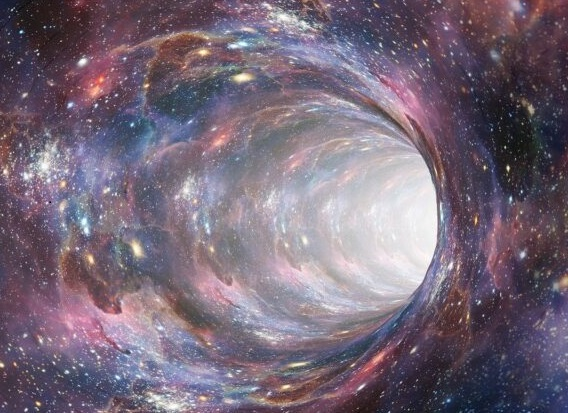

¿Qué son los agujeros negros?

Un agujero negro es una región finita del espacio en cuyo interior existe una concentración de la masa lo suficientemente elevada como para generar un campo gravitatorio tal que ninguna partícula material, ni siquiera la luz, pueda escapar de ella. La gravedad de un agujero negro, o «curvatura del espacio-tiempo», provoca una singularidad envuelta por una superficie cerrada, llamada horizonte de sucesos. Esto es previsto por las ecuaciones del campo de Einstein. El horizonte de sucesos separa la región del agujero negro del resto del universo, y a partir de él ninguna partícula puede salir, incluidos los fotones. Dicha curvatura es estudiada por la relatividad general, la que predijo la existencia de los agujeros negros y fue su primer indicio. En la década de 1970, Stephen Hawking, Ellis y Penrose demostraron varios teoremas importantes sobre la ocurrencia y geometría de los agujeros negros.
¿Cómo se forman los agujeros negros?
Los aguejEros negros se forman en un proceso de colapso gravitatorio ampliamente estudiado a mediados del siglo XX por diversos científicos, particularmente Robert Oppenheimer y Stephen Hawking.